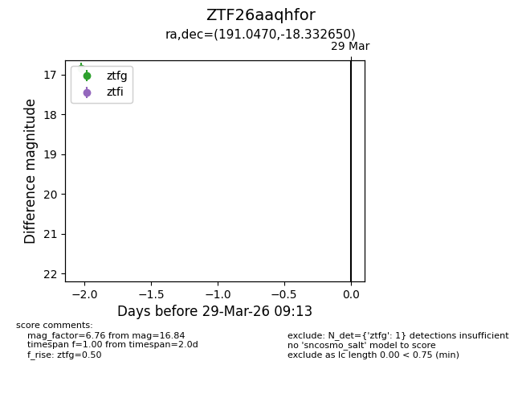
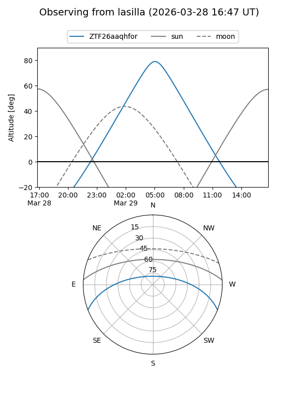
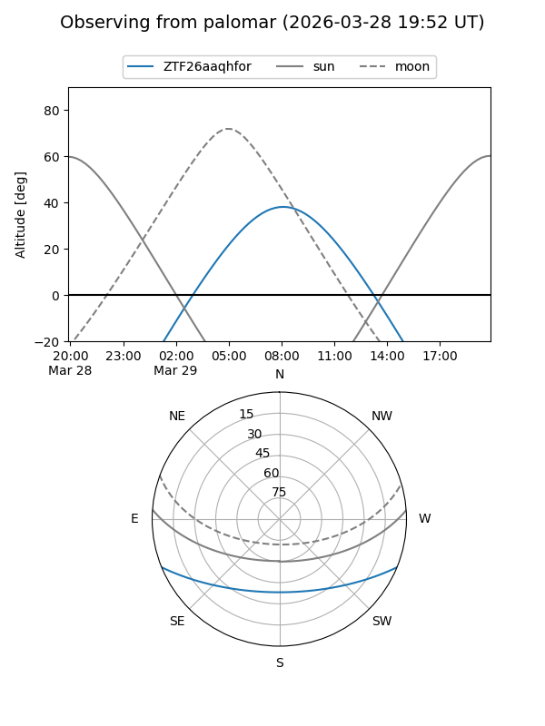

ZTF26aaqhfor
Target ZTF26aaqhfor at 2026-03-29 09:16
Aliases and brokers:
FINK: link
Lasair: link
ALeRCE: link
alt names
ZTF26aaqhfor (ztf,fink_ztf)
Coordinates:
equatorial (ra, dec) = 191.0470,-18.33265
equatorial (HMS+DMS) = 12:44:11.28,-18:19:57.54
galactic (l, b) = (300.5192,+44.50513)
Flags:
Photometry:
last ztfg=16.84
1 ztfg detections
Lightcurve

Visibility


Additional plots